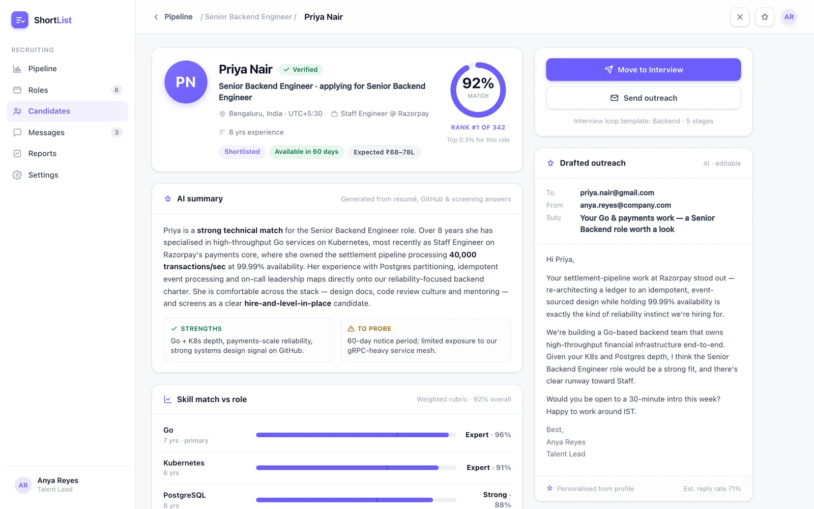

A defensible shortlist in minutes, not days.
ShortList reads every application, scores each candidate against the role, and hands you a ranked shortlist — with the outreach already drafted. 342 applications in, 24 shortlisted, zero read cold.
One role, screened end to end
The numbers below are the modelled Senior Backend Engineer search — the same run the product tour walks through.
Read, score, rank, reach — on autopilot
Every applicant runs through the same four steps, so the tenth candidate is judged exactly like the first.
Read
ShortList parses every résumé and application against the role brief — no cover letter left unread.
Score
Each candidate gets an explainable 0–100 match against a weighted rubric — skills, experience, screening answers.
Rank
Scores sort into a leaderboard with a shortlist cut line at 80 — you see exactly who clears the bar and why.
Reach
A personalised outreach email is drafted for every shortlisted candidate — with an estimated reply rate.
Not a black box. A rubric you can defend.
Each match score breaks down into the parts that made it — measured against what the role actually asked for. When a hiring manager asks "why is she a 92?", you have the answer on screen.
- Per-skill fit vs the roleEach required skill is scored against the level the role needs, not in the abstract.
- Experience, weightedDepth and relevance of experience feed the score by the weighting you set.
- Screening answersAI-generated screening Q&A surface signal a résumé alone would miss.
- Strengths & things to probeEvery profile flags what stands out and what to press on in the interview.
The whole role, one screen at a time
From the pipeline overview down to a single candidate's drafted intro email — this is the modelled Senior Backend Engineer run.
A live funnel, a distribution, a ranked table
The role dashboard opens on funnel stat tiles, a match-score distribution with the shortlist cut line at 80, and the AI-ranked candidates table underneath.
- Funnel tiles: applicants, auto-screened, shortlisted, interviewing
- Score distribution with a cut line at 80
- Ranked table with skills, experience, stage badges and AI notes

One profile, everything that made the score
Open a candidate and you get the 92% match ring, an AI summary, per-skill fit bars against the role, an experience timeline, a drafted outreach email and the screening Q&A.
- 92% match ring with AI summary and strengths / to-probe flags
- Per-skill fit bars measured against the role requirement
- Drafted outreach email and AI screening Q&A

Everything a role needs, in one screen
Built as a clickable, design-partner-ready MVP — grounded in a real search, not a mock.
Role pipeline with live tiles
Applicants, auto-screened, shortlisted and interviewing — the funnel updates as candidates move through.
Explainable 0–100 score
A weighted rubric turns each application into a defensible number — with the breakdown behind it.
Distribution with a cut line
See the whole score distribution at a glance, with a shortlist cut line at 80 marking who clears the bar.
Ranked candidates table
Skills, experience, stage badges and AI notes — sorted so the strongest fit is always on top.
Screening funnel & rates
Conversion at every stage of the screen, so you know where a pipeline widens or stalls.
Outreach with reply estimate
A personalised intro email per candidate, drafted and ready — each with an estimated reply rate.
The email is drafted before you click send.
Every shortlisted candidate arrives with a personalised intro that references what actually made them a fit — so time-to-first-outreach drops from a blank page to a single review.
Built on a modern, production stack
Résumé scoring runs on OpenAI with embeddings; the app ships on the tools our team builds AI-native products with every day.
342 in, 24 shortlisted, zero read cold.
Bring us a role and a stack of applications — we'll show you a ranked, explainable shortlist with the outreach already written.
Explainable by design · An auditable reason for every ranking